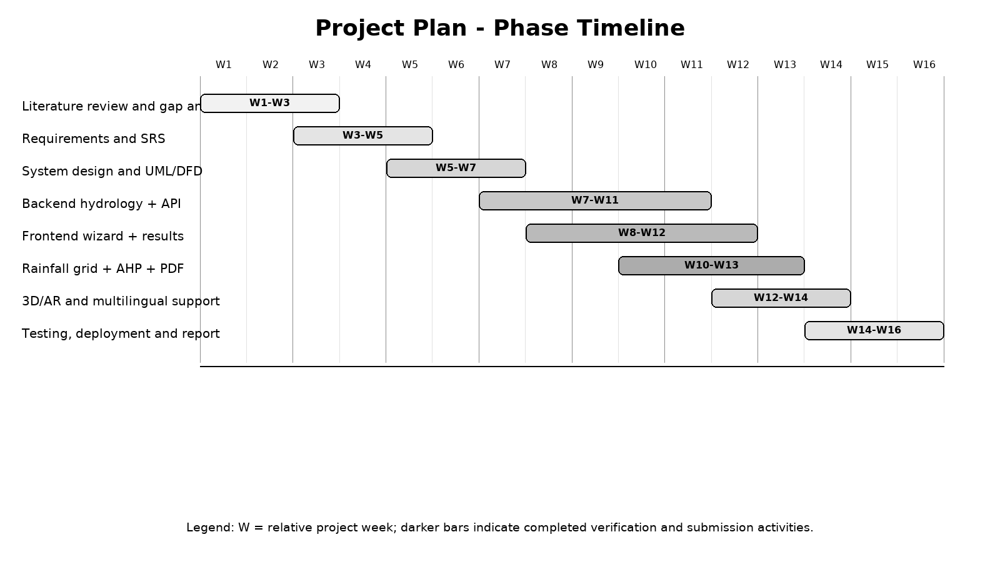

The project was executed in sixteen relative weeks grouped into eight overlapping work streams. Early weeks focused on literature review, problem definition and requirements. Middle weeks produced architecture and core backend services. Later weeks added frontend pages, rainfall raster, AHP, PDF, 3D/AR, multilingual support, testing, deployment and report preparation.
The iterative approach allowed findings from testing to feed back into requirements. For example, the need for a local rainfall override emerged from the coarse-grid limitation; the need for nullable payback emerged from economic sensitivity; and the need for admin-token protection emerged from security review. The Gantt chart uses relative weeks rather than invented calendar dates.

Figure 10.1: Project phase timeline
Legend: W denotes a relative project week; all phases are marked complete for Stage II.
The project team consisted of four students under the guidance of Dr. Dipali H. Patil. Work was divided by technical domain while maintaining shared code review responsibilities. Shubham Desai focused on hydrological modelling and backend integration; Siddhesh Mahadik on GIS data and map interaction; Kaushal Agale on recommendation logic and results; Omkar Kshirsagar on 3D/AR and frontend presentation.
All members contributed to literature survey, testing, documentation and report preparation. The division of labour is indicative of primary ownership rather than exclusive contribution; the final repository is the result of integrated work. The guide reviewed the research direction, paper structure, methodology and validation expectations.
Table 10.1: Work allocation
| Team member | Primary responsibility | Deliverables |
|---|---|---|
| Mr. Shubham Desai | Hydrology and backend | Services, API, calculations |
| Mr. Siddhesh Mahadik | GIS and data | Rainfall grid, map picker, provenance |
| Mr. Kaushal Agale | Recommendation and results | AHP, charts, cost-benefit |
| Mr. Omkar Kshirsagar | Frontend and AR | UI, 3D/AR, multilingual support |
| Dr. Dipali H. Patil | Guidance and review | Research direction and validation |
At the end of Stage II, all planned software modules are implemented. The frontend is publicly deployed at the URL provided by the team. The backend exposes the full assessment and reporting API. The rainfall raster, AHP engine, cost model, multilingual PDF, database lifecycle, 3D/AR route and automated tests are present in the repository.
Verification status is 38/38 backend tests passing and a successful Next.js production build. The survey paper associated with the project is accepted for ICICIS 2026 under Paper ID 195; the official acceptance proof and institution-approved plagiarism report are to be inserted in the appendices by the students. No publication date, volume, DOI or plagiarism score has been invented in this report.
Table 10.2: Stage-II completion status
| Item | Status | Evidence |
|---|---|---|
| Survey paper | Accepted | Paper ID 195 / ICICIS 2026; proof to be inserted |
| Backend implementation | Completed | FastAPI services and 38 tests |
| Frontend implementation | Completed | Production build succeeded |
| Deployment | Live frontend | Vercel URL provided by team |
| Database | Implemented | SQLite local / PostgreSQL path |
| Documentation | Completed | This Stage-II report and README |
| Plagiarism report | Pending attachment | Official report to be inserted |